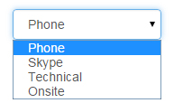

About Us
JooJ is an open-source, crowd-sourced platform dedicated to collect real world job interview questions that are being/were asked by IT employers.
The process is very simple. We ask and encourage the students looking for job and giving interviews to take a few minutes and share some of the questions they were asked during their interviews. On the other hand, those who are still studying and\or preparing for job interviews can look up questions of their interest and study.
Jooj makes it very easy to submit questions.
- Question

- Tags
- To identify the questions later on. For example:

- Interview Type
- To identify at which stage of the interview the question was asked. For example: 
This is it!
If anyone would like to contribute to the open-source project please let us know or checkout the project on: https://github.com/amarbayar/jooj
Our team didn't have prior web development experience. We used our knowledge and experience gained from our most recent class: Web Application Programming and made this website (with the help of some other open-source tools such as Bootstrap and jQuery plugins). Therefore, please accept our apology (in advance) if you find our design, code, structure...etc with flaws but we would appreciate it if you can share your advise and thoughts!
Thanks and Happy Joojing!
Team JooJ /Adiya Bayansan, Amarbold Sodnomdorj, Amarbayar Amarsanaa/